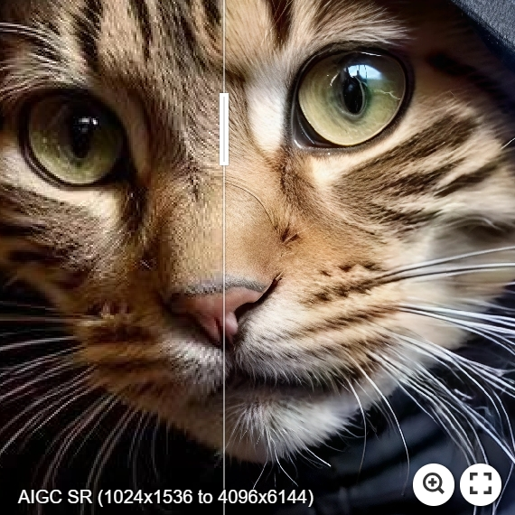
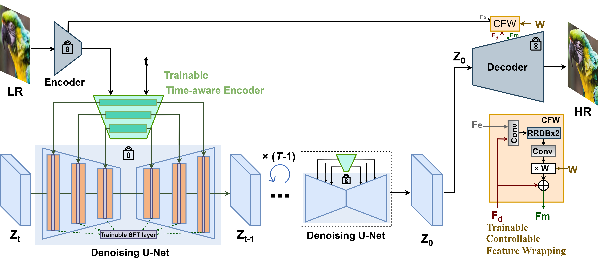
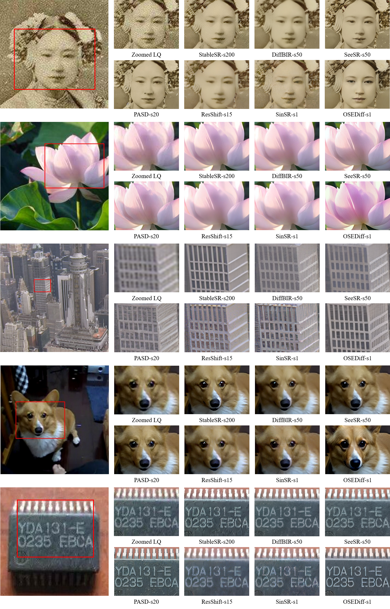
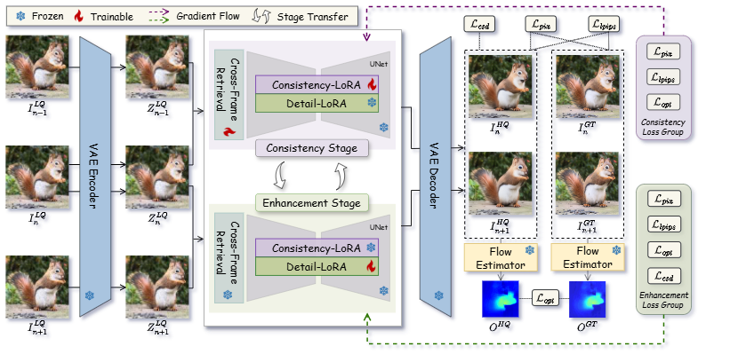
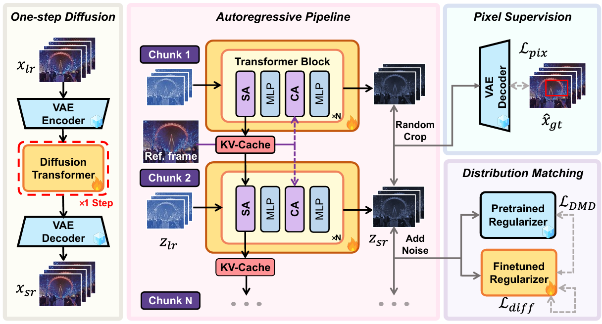
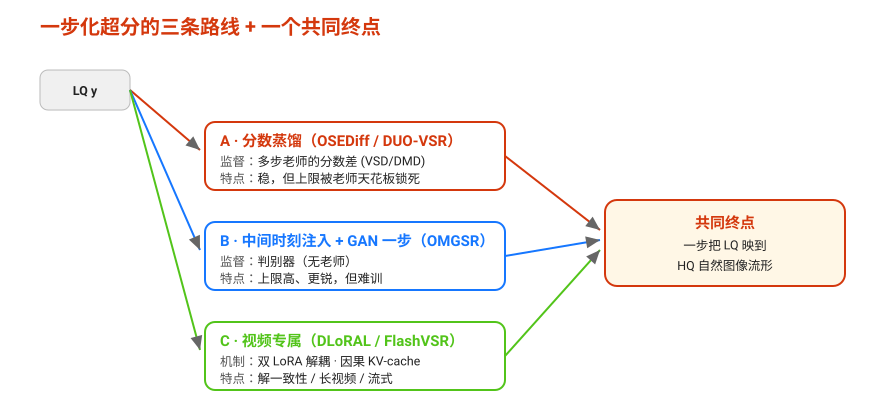

扩散超分全景：从多步先验到一步前向，再到视频流式
超分辨率（Super-Resolution, SR）要解一个天生欠定的问题：一张低清图对应着无穷多张合理的高清图。回归模型被均方误差逼着取平均，输出注定模糊；扩散模型则换一条路——学整个高清图像的分布，从中采样一个既清晰又与输入相符的解。这把"生成先验"引进了超分，也带来了新的主线矛盾：质量来自多步迭代采样，而落地需要速度。
本教程沿这条矛盾把近五年的扩散超分串成一条演化线：先看多步范式如何站上 Stable Diffusion 的肩膀（§1–§2），再看三条把"几十步随机采样"压成"一步确定性前向"的路线如何分道扬镳（§3–§4），然后跨过图像-视频的鸿沟，看时序一致性、一步化与流式实时如何在视频上重演同一套逻辑（§5–§7），最后收敛到一个统一视角与一张选型地图（§8）。每节按"直觉 → 最小 demo → 正式化 → 真实代码引用 → 洞察"五步展开；所有 Step-4 代码都逐字引自对应论文的开源仓库。
1. 为什么用扩散做超分：从回归到生成先验
1.1 直觉
想象你拿到一张被打了厚厚马赛克的照片，要把它还原成清晰版本。这件事天生就没有唯一答案：同一块马赛克，可能来自张三的脸，也可能来自李四的脸。传统的回归模型（直接学"低清→高清"的映射）会怎么做？它为了让平均误差最小，干脆把所有可能的清晰答案"叠在一起取平均"——结果就是一张谁都不像、糊成一团的"平均脸"。
扩散模型换了个思路：它不求平均，而是凭着见过的海量清晰图像积累的"经验"，赌一个最合理、最逼真的清晰版本采样出来。这就是"生成先验"——与其给一个安全但模糊的答案，不如给一个大胆但锐利、且符合自然图像统计规律的答案。这正是 SR3、StableSR 这一脉多步扩散超分的出发点。
关键在于：超分是个欠定问题，一张低清图对应着无穷多张合理的高清解。回归模型被均方误差逼着在所有解里取一个折中，注定模糊；扩散模型则承认"解不唯一"，转而去学整个高清图像的分布，推理时从这个分布里挑一个既清晰又与低清输入相符的样本。代价是它得分很多步、带着随机性慢慢"采"出来——这份"慢"，正是后文一步化要攻克的靶子。

1.2 最小 demo
下面用约 30 行 PyTorch 跑通一个条件 DDPM 的完整骨架：定义噪声调度，对高清真值正向加噪，再从纯噪声出发、把低清条件 y 真实拼进网络输入、逐步反向去噪采样。网络权重是随机初始化的（教学用，不训练），但加噪公式与反向更新都是真的，张量形状也是真的。
import torch, torch.nn as nn
B, C, H, W = 2, 3, 16, 16
T = 50
betas = torch.linspace(1e-4, 0.02, T)
alphas = 1.0 - betas
abar = torch.cumprod(alphas, dim=0) # 累积系数 ᾱ_t
# 极简条件去噪网络：输入 [x_t ⊕ 低清条件 y ⊕ 时间图] → 预测噪声 ε
class EpsNet(nn.Module):
def __init__(self):
super().__init__()
self.net = nn.Sequential(nn.Conv2d(2 * C + 1, 32, 3, padding=1), nn.ReLU(),
nn.Conv2d(32, C, 3, padding=1))
def forward(self, x_t, y, t):
tmap = (t.float() / T).view(B, 1, 1, 1).expand(B, 1, H, W) # 时间步广播成一张图
return self.net(torch.cat([x_t, y, tmap], dim=1)) # 条件 y 真实拼进输入
eps_theta = EpsNet()
x0 = torch.randn(B, C, H, W) # 高清真值 HQ（演示用随机张量）
y = torch.randn(B, C, H, W) # 低清条件 LQ（与 HQ 空间对齐）
# 正向加噪： x_t = √ᾱ_t · x0 + √(1-ᾱ_t) · ε
t = torch.full((B,), T - 1, dtype=torch.long)
eps = torch.randn_like(x0)
x_t = abar[t].sqrt().view(B, 1, 1, 1) * x0 + (1 - abar[t]).sqrt().view(B, 1, 1, 1) * eps
# 反向逐步去噪采样：从纯噪声出发，条件 y 每一步都注入
x = torch.randn(B, C, H, W)
for ti in reversed(range(T)):
tb = torch.full((B,), ti, dtype=torch.long)
e = eps_theta(x, y, tb) # 预测这一步的噪声
a, ab = alphas[ti], abar[ti]
mean = (x - (1 - a) / (1 - ab).sqrt() * e) / a.sqrt() # DDPM 后验均值
x = mean + (betas[ti].sqrt() * torch.randn_like(x) if ti > 0 else 0) # 末步外加随机项
print(x.shape) # torch.Size([2, 3, 16, 16]) —— 采样出的一个清晰解
跑起来你会看到：从一团纯噪声出发，循环 T 步，每一步都把低清条件 y 喂进网络、预测噪声、再后退一小步，最终吐出一张和高清同形状的图。这就是"采样一个解"而非"回归一个平均"的最小可运行版本。
1.3 正式化
先定义记号：LQ 低清输入 \(y\)，HQ 高清真值 \(x\)，扩散时间步 \(t\)，噪声预测网络 \(\epsilon_\theta\)，累积噪声系数 \(\bar\alpha_t\)。前向过程把干净图 \(x\) 一步加噪到 \(x_t\)：
—— 翻译：在第 \(t\) 步，把高清图按比例 \(\sqrt{\bar\alpha_t}\) 缩小、再掺进比例 \(\sqrt{1-\bar\alpha_t}\) 的高斯噪声，\(t\) 越大噪声越多、\(x_t\) 越接近纯噪声。
把低清图 \(y\) 作为条件 \(c\)，训练目标是让网络在已知"加噪图 + 时间步 + 低清条件"时，准确预测当初掺进去的那团噪声：
—— 翻译：对所有样本、噪声和时间步取期望，让网络预测的噪声 \(\epsilon_\theta\) 尽量贴近真实噪声 \(\epsilon\)，这就把"生成清晰图"转化成了一个稳定的回归噪声任务。
为什么 LQ 要作条件 \(c\) 而不是直接当回归输入？因为 \(c\) 只负责"约束解落在与 \(y\) 相符的范围内"，真正的细节由网络从噪声里采样生成——保真靠条件，逼真靠采样。为什么逆过程必须多步？因为从纯噪声一步还原到清晰图是高度病态的，扩散把它拆成许多条件良好的小步，每步只去掉一点噪声：
—— 翻译：用预测的噪声把 \(x_t\) 往回推一小步得到 \(x_{t-1}\)，并在非末步注入随机项 \(\sigma_t z\)，循环 \(T\) 次后 SNR 从近 \(0\) 一路升到清晰图。
这里的 \(\text{SNR}(t)=\bar\alpha_t/(1-\bar\alpha_t)\) 量化了第 \(t\) 步图像里"信号"与"噪声"的比值：\(t\) 大时 SNR 趋近 \(0\)（几乎全是噪声），\(t\) 小时 SNR 很高（接近干净图）。反向采样就是沿着这条 SNR 由低到高的轨迹一步步爬升，每一步只需在当前噪声水平上完成一次"局部"去噪——这正是把病态的一步反演拆成多步后，每步都条件良好的根本原因。而在隐空间扩散（如 StableSR 基于 SD）里，这一切并不直接作用于像素图，而是先经 VAE 编码器 \(E\) 把图压进 latent \(z\)，在 \(z\) 上跑完整套加噪-去噪，最后用解码器 \(D\) 还原到像素——既省算力，又借到了 SD 预训练的强生成先验。
1.4 代码引用
StableSR 的实际推理就是上式的逐步实现。下面是 DDIM 采样主循环：从噪声 img 出发，反向遍历时间步，每步调用 p_sample_ddim 完成一次"去噪后退"，条件 cond 全程注入。
sources/repos/IceClear-StableSR/ldm/models/diffusion/ddim.py:L204-L226 — DDIM 多步反向去噪采样主循环
for i, step in enumerate(iterator):
index = total_steps - i - 1
ts = torch.full((b,), step, device=device, dtype=torch.long)
if mask is not None:
assert x0 is not None
img_orig = self.model.q_sample(x0, ts) # TODO: deterministic forward pass?
img = img_orig * mask + (1. - mask) * img
outs = self.p_sample_ddim(img, cond, ts, index=index, use_original_steps=ddim_use_original_steps,
quantize_denoised=quantize_denoised, temperature=temperature,
noise_dropout=noise_dropout, score_corrector=score_corrector,
corrector_kwargs=corrector_kwargs,
unconditional_guidance_scale=unconditional_guidance_scale,
unconditional_conditioning=unconditional_conditioning)
img, pred_x0 = outs
if callback: callback(i)
if img_callback: img_callback(pred_x0, i)
if index % log_every_t == 0 or index == total_steps - 1:
intermediates['x_inter'].append(img)
intermediates['pred_x0'].append(pred_x0)
对照 §1.3：for i, step in enumerate(iterator) 就是把逆过程拆成 \(T\) 个小步的多步循环；ts 对应公式里的时间步 \(t\)；p_sample_ddim(img, cond, ts, ...) 中的 cond 正是低清条件 \(c\)，它对应一次 \(x_t\to x_{t-1}\) 的反向更新；返回的 img 是后退一步后的 \(x_{t-1}\)，pred_x0 是当前对清晰图 \(x\) 的估计。可见"多步采样"在工程上就是这样一个朴素的 for 循环——也正是它把推理拖慢的根源。
1.5 洞察
- 多步=质量，但也=慢：把病态的一步还原拆成几十上百个条件良好的小步，每步只需修正一点，因而细节逼真；代价是网络要被前向调用几十上百次，单图推理动辄数秒。
- 随机性带来保真-逼真权衡：反向每步注入的随机项 \(\sigma_t z\) 让模型能"赌"出锐利细节（逼真），但也意味着同一低清图采样两次结果不同，且可能偏离真值（保真下降）——这是生成先验与回归的本质分野。
- 条件注入是保真的缰绳：低清图 \(y\) 作条件 \(c\) 在每一步都被喂进网络，相当于给自由采样套上"必须与输入相符"的约束；没有它，强生成先验会天马行空地"脑补"出与原图无关的内容。如何让这根缰绳既不松（跑偏）也不紧（变回模糊回归），是扩散超分调参的核心张力。
- 多步之慢必然催生"一步化"：当质量已足够好，瓶颈就只剩速度——几十步意味着几十次网络前向，难以满足实时与流式需求。后文要讲的，正是如何把这个几十步的随机采样蒸馏压成一步确定性前向，再从单图扩展到视频的时序与流式——这是本专题主线的下一站。
2. 站在 SD 的肩膀上：latent diffusion prior 与 Real-ISR 的退化问题
2.1 直觉
从零训练一个能生成清晰世界的扩散模型，要烧掉成百上千张 GPU 卡月。但 Stable Diffusion（SD）早已在数十亿张图上学会了"清晰世界长什么样"——它见过毛发、砖缝、文字边缘的所有细节分布。超分辨率（SR）其实不需要重新教它画画，只需要给它递一张糊图（低清输入 LQ y），说一句："照着这张糊图，画出对应的清晰版（高清 HQ x）。"
这就是 StableSR 的核心思路：冻结 SD 当先验，只训练"怎么把 LQ 喂进去"。打个比方：SD 是一位画功登峰造极、但只会凭空创作的画家；我们不去改造他的手，只在他面前架一块"参照板"（time-aware encoder），把糊图的结构信息实时投影上去；再在他完稿时加一道"保真旋钮"（CFW），让你决定成品是更忠于原图、还是更天马行空。画家本人（SD 的几十亿参数）一笔未动。
为什么"参照板"要带时间感（time-aware）？因为扩散是逐步去噪的过程：早期时间步噪声大、画家在勾轮廓，需要的是粗结构；后期噪声小、画家在描细节，需要的是高频纹理。同一张 LQ 在不同时间步该强调的信息不同，所以条件特征必须随时间步 t 调制，而非一成不变地灌进去。这一点是 StableSR 区别于早期"把 LQ 直接拼到输入通道"做法的关键。

2.2 最小 demo
下面用真实形状张量跑通"真实退化合成 + 条件注入"的骨架：先按退化模型把一张 HQ 卷积模糊、步长下采样、加噪得到 LQ，再用一个占位 encoder 把 LQ 编成条件特征，并演示 time-aware 时间调制的形状变化。
import torch, torch.nn.functional as F
def gaussian_kernel(ksize=15, sigma=3.0):
ax = torch.arange(ksize) - ksize // 2
xx, yy = torch.meshgrid(ax, ax, indexing="ij")
k = torch.exp(-(xx**2 + yy**2) / (2 * sigma**2))
return k / k.sum()
x = torch.randn(1, 3, 256, 256) # HQ 图 x（真实形状，非假数据）
# --- 退化管线 y = (x ⊗ k)↓_s + n ---
k = gaussian_kernel().view(1, 1, 15, 15).repeat(3, 1, 1, 1) # depthwise 模糊核
blur = F.conv2d(x, k, padding=7, groups=3) # 模糊：x ⊗ k
s = 4
down = blur[:, :, ::s, ::s] # 步长下采样：↓_s
y = down + 0.05 * torch.randn_like(down) # 加噪：+ n
print("LQ y:", tuple(y.shape)) # (1, 3, 64, 64)
# --- 占位 time-aware encoder：把 LQ 编成条件特征 z_c，并随 t 调制 ---
enc = torch.nn.Conv2d(3, 64, 3, padding=1) # 冻结 SD 外唯一可训部分
z_c = enc(y) # 条件特征 z_c = E(y)
t = torch.tensor([500.]) # 时间步 t
gamma = (t / 1000.).view(1, 1, 1, 1) # time-aware 标量调制因子
z_c = z_c * (1 + gamma) # SFT 式时间调制
print("cond feature z_c:", tuple(z_c.shape)) # (1, 64, 64, 64)
跑出 LQ 形状 (1,3,64,64)、条件特征 (1,64,64,64)：退化把空间分辨率砍掉 4 倍，而条件 encoder 在低清空间提特征，再随时间步缩放——这正是 time-aware 的雏形。
2.3 正式化
Real-ISR 的真问题不在于"放大"，而在于真实复杂退化：现实里的糊图绝不是一次干净的 bicubic 下采样，而是模糊、降采样、噪声（乃至压缩）的叠加。StableSR 用经典退化模型刻画：
—— 翻译：低清 y 等于高清 x 先与模糊核 k 卷积、再以步长 s 下采样、最后叠加噪声 n。
实战中 k、s、n 都被随机化（不同核形状、不同噪声强度、乃至二阶退化与 JPEG 压缩），构成一个庞大的退化空间，逼模型学会"任意复杂退化下的复原"，而不是过拟合到某一种下采样方式。这正是 demo 里把卷积、跨步切片、加噪三步串起来的现实意义。
把 LQ 编码进 SD 的 latent 空间，得到条件特征：
—— 翻译：条件 latent \(z_c\) 是把 LQ y 送入冻结 VAE 编码器 E 得到的特征。
\(z_c\) 经 time-aware encoder 调制后，以 SFT（spatial feature transform）方式注入冻结 U-Net 的各层。最后在解码端，CFW 模块对解码特征 \(F_d\) 与 LQ 编码特征 \(F_e\) 做带权融合：
—— 翻译：融合特征 \(F_m\) 等于解码特征 \(F_d\) 加上权重 w 乘以 CFW 网络 C 对 \((F_e,F_d)\) 算出的修正量。
权重 w 就是保真-逼真旋钮。当 \(w\to 1\)，LQ 的结构修正量被完整加回，输出更贴近原图（保真）；当 \(w\to 0\)，\(F_m\to F_d\)，完全交给 SD 先验自由生成（逼真）。\(w\in(0,1)\) 时在两者间连续插值，覆盖从"忠实"到"惊艳"的整条权衡曲线。注意这条插值只发生在解码端的特征层，且 CFW 仅有 RRDB 几层可训练——它不改变 U-Net 已采样出的 latent \(z_0\)，只在还原像素时决定信赖 LQ 多一点、还是信赖先验多一点，因此推理时即插即用、无需重训即可滑动 w。
2.4 代码引用
CFW 的全部逻辑就藏在解码器的融合块里——它精确实现了 §2.3 的 \(F_m=F_d+w\cdot C(F_e,F_d)\)：
sources/repos/IceClear-StableSR/ldm/modules/diffusionmodules/model.py:L822-L835 — CFW 可控特征融合块：拼接 LQ 编码特征与解码特征，经 RRDB 提修正量后按权重 w 残差注入
class Fuse_sft_block_RRDB(nn.Module):
def __init__(self, in_ch, out_ch, num_block=1, num_grow_ch=32):
super().__init__()
self.encode_enc_1 = ResBlock(2*in_ch, in_ch)
self.encode_enc_2 = make_layer(RRDB, num_block, num_feat=in_ch, num_grow_ch=num_grow_ch)
self.encode_enc_3 = ResBlock(in_ch, out_ch)
def forward(self, enc_feat, dec_feat, w=1):
enc_feat = self.encode_enc_1(torch.cat([enc_feat, dec_feat], dim=1))
enc_feat = self.encode_enc_2(enc_feat)
enc_feat = self.encode_enc_3(enc_feat)
residual = w * enc_feat
out = dec_feat + residual
return out
对照 §2.3：入参 enc_feat 即 \(F_e\)（LQ 编码特征）、dec_feat 即 \(F_d\)（SD 解码特征）；torch.cat([enc_feat, dec_feat]) 后经 ResBlock + RRDB + ResBlock 三段网络算出修正量，正是公式里的 \(C(F_e,F_d)\)；residual = w * enc_feat 与 out = dec_feat + residual 合起来就是 \(F_m=F_d+w\cdot C(F_e,F_d)\)。w=1 默认全量保真，调小 w 即放手给先验。整块只有 RRDB 几层可训练，SD 解码器主干完全冻结。
2.5 洞察
- "冻结先验只学条件"是后续所有高效法的底座：StableSR 把"训练扩散模型"降维成"训练一个条件适配器"，可训参数从十亿级缩到千万级。后面要讲的一步蒸馏（OSEDiff、DLoRAL）都继承了这一前提——既然先验已被冻结复用，优化目标就只剩"把多步采样压成一步"，而非重训生成能力。
- 真实退化建模决定泛化：若训练只用 bicubic 下采样，模型一遇到真实世界的复合模糊+噪声+压缩就崩。\(y=(x\otimes k)\downarrow_s+n\) 这条退化管线（及其随机化扩展）是 Real-ISR 能落地的前提，也是评测必须区分"合成退化"与"真实退化"的原因。
- CFW 权衡之所以重要：保真与逼真本质冲突——越贴原图越不敢编细节，越敢生成越可能跑偏。把这对矛盾收敛成一个连续可调的标量 w，让同一模型在"证件照修复"（要保真）和"老照片增强"（要逼真）间无需重训即可切换，是工程可用性的关键。
3. 一步化路线 A：分数蒸馏（OSEDiff / VSD）
3.1 直觉
§1 我们看到多步扩散虽然质量高，却要把同一张图反复去噪几十次，慢得无法落地。分数蒸馏（score distillation）给出的第一条压缩路线是：别再一步步擦掉噪声，让学生一口气把图画完。
具体到超分，OSEDiff 做了两件激进的事。第一，LQ latent 直接当扩散的起点——多步采样要从随机高斯噪声出发，每次采样结果都不同，这种"随机性"对超分有害（超分要的是确定地还原这一张图，而不是"生成一张看起来合理的图"）；OSEDiff 干脆把 LQ 图经 VAE 编码进 latent 当作固定输入，配上一个固定时间步 \(t\)，一次 UNet 前向就出结果。这一刀同时砍掉了"几十步迭代"和"采样不确定性"两个开销。第二，单步学生天然缺乏多步采样逐步积累的细节，输出容易平滑、发虚；于是请两位老师来"打分纠偏"：一位是冻结的预训练扩散（懂真实世界长什么样，是"博物馆里的大师"），一位是只盯着学生当前作品的 LoRA 分支（懂学生现在画成什么样，是"贴身陪练"）。两位老师对同一张加噪图各给一个"分数"（去噪方向），它们的差就是把学生分布推向真实分布的梯度——这正是变分分数蒸馏（VSD）。
为什么要"分数之差"而不是直接拿真实老师的分数去拉？因为真实老师只知道"真实图该往哪去",并不知道"学生现在偏在哪"。只有再减去陪练老师给出的"学生当前分布的分数",两者相减,剩下的才是纯粹指向真实、且扣掉了学生自身偏置的修正方向。这就是 VSD 比朴素 score distillation（SDS）更不易过饱和的核心原因。

3.2 最小 demo
下面用真实形状的 latent（z=(B,4,64,64)，即 SD 的 VAE latent 几何）实现 VSD 梯度的最小内核：生成器 \(G\) 把 LQ latent 映成 HQ latent，对其加噪后分别送进 real-score 与 fake-score 两个网络，二者输出之差 eps_fake - eps_real 即对生成器的梯度，用 DMD 的代理 loss 真正 backward 到 \(G\) 的参数。
import torch, torch.nn as nn
B = 2
G = nn.Conv2d(4, 4, 3, padding=1) # 学生: LQ latent -> HQ latent
score_real = nn.Sequential(nn.Conv2d(4,4,3,padding=1), nn.SiLU(), nn.Conv2d(4,4,3,padding=1)) # 冻结预训练
score_fake = nn.Sequential(nn.Conv2d(4,4,3,padding=1), nn.SiLU(), nn.Conv2d(4,4,3,padding=1)) # 在线 LoRA 替身
for p in score_real.parameters(): p.requires_grad_(False) # real-score 固定
opt_G = torch.optim.SGD(G.parameters(), lr=1e-2)
lq = torch.randn(B, 4, 64, 64) # LQ latent (真实几何)
z = G(lq) # 一步生成 HQ latent
noise = torch.randn_like(z)
t = torch.rand(B, 1, 1, 1) # 简化的加噪强度
z_noisy = (1 - t).sqrt() * z + t.sqrt() * noise # 在加噪 latent 上比较两位老师
with torch.no_grad(): # 老师不回传，只给方向
eps_real = score_real(z_noisy) # 真实分布的去噪方向
eps_fake = score_fake(z_noisy) # 学生当前分布的去噪方向
grad = (eps_fake - eps_real) # VSD 梯度: 把学生推向真实分布
loss = torch.nn.functional.mse_loss(z, (z - grad).detach()) # DMD 代理: 让 z 沿 -grad 移动
loss.backward(); opt_G.step() # 梯度真正落到 G 的参数上
print(loss.item(), G.weight.grad.norm().item())
注意 (z - grad).detach() 这个技巧：grad 本身是手算出来的方向，并不带 autograd 历史；把它包成 (z - grad).detach() 当作"目标"，再对 z 做 MSE，反传时恰好等价于给 z 施加梯度 grad，于是分数之差被以最小代价转成了一个可 backward 的标量 loss，autograd 会自动把它沿 \(\partial z/\partial\theta\) 传回生成器。这正是 OSEDiff 代码里的写法，下一步即可逐字对照。真实的 OSEDiff 还把这步换到 \(x_0\) 空间、对 real-score 加了 CFG，但内核与这二十行完全一致。
3.3 正式化
VSD（变分分数蒸馏）的目标是最小化学生输出分布 \(p_\theta\) 与预训练扩散真实分布 \(p_{\text{real}}\) 在所有加噪尺度上的 KL 散度。对该 KL 求生成器参数 \(\theta\) 的梯度，可写成两个分数函数之差乘以雅可比：
—— 翻译：对每个加噪时刻 \(t\) 和噪声 \(\epsilon\)，取固定预训练网络 \(\epsilon_\phi\)（real score）减去可训练 LoRA 网络 \(\epsilon_\psi\)（fake score）的预测差，乘权重 \(w(t)\) 和"学生输出对参数的导数"\(\partial z/\partial\theta\)，再对 \(t,\epsilon\) 求期望，就是更新生成器的梯度。
这里 \(\epsilon_\phi\) 是固定的预训练扩散，代表真实数据的分数 \(s_{\text{real}}\approx\nabla_{z_t}\log p_{\text{real}}(z_t)\)；\(\epsilon_\psi\) 是一个在线训练的 LoRA 分支，时刻拟合学生当前输出的分布，代表 \(s_{\text{fake}}\approx\nabla_{z_t}\log p_\theta(z_t)\)。回忆扩散里"噪声预测"与"分数"只差一个常数（\(\epsilon_\theta(z_t,t)\propto-\nabla_{z_t}\log p(z_t)\)），所以 \(\epsilon_\phi-\epsilon_\psi\) 在符号反转后正是 \(\nabla\log p_{\text{real}}-\nabla\log p_\theta\)，即 KL 散度 \(D_{\mathrm{KL}}(p_\theta\,\Vert\,p_{\text{real}})\) 对 \(z\) 的梯度方向。换句话说，沿这个差的反方向移动学生输出，就是在所有加噪尺度上同时缩小学生分布与真实分布的 KL。fake-score 必须与学生同步更新，靠的是一个普通的去噪 MSE：
—— 翻译：让 LoRA 分支在学生当前生成的 latent 上做标准的"预测所加噪声"训练，使它始终是学生输出分布的准确分数估计器，这样上一式的 \(\epsilon_\psi\) 才真正代表 \(p_\theta\)。
噪声预测 \(\epsilon\) 与去噪结果 \(x_0\) 可互换（\(x_0=(z_t-\sqrt{1-\bar\alpha_t}\,\epsilon)/\sqrt{\bar\alpha_t}\)），所以实现里既可用 \(\epsilon\) 之差也可用 \(x_0\) 之差，二者等价仅差一个与 \(t\) 有关的缩放。
3.4 代码引用
OSEDiff 把上面的 VSD 梯度写成 distribution_matching_loss：在加噪 latent 上分别取在线 UNet（fake/student score）与固定 UNet（real score，带 CFG）的预测，转成 \(x_0\) 后作差当梯度。
sources/repos/cswry-OSEDiff/osediff.py:L206-L243 — VSD / 分布匹配损失：real-score 与 fake-score 之差作为生成器梯度
def distribution_matching_loss(self, latents, prompt_embeds, neg_prompt_embeds, args):
bsz = latents.shape[0]
timesteps = torch.randint(20, 980, (bsz,), device=latents.device).long()
noise = torch.randn_like(latents)
noisy_latents = self.noise_scheduler.add_noise(latents, noise, timesteps)
with torch.no_grad():
noise_pred_update = self.unet_update(
noisy_latents,
timestep=timesteps,
encoder_hidden_states=prompt_embeds.float(),
).sample
x0_pred_update = self.eps_to_mu(self.noise_scheduler, noise_pred_update, noisy_latents, timesteps)
noisy_latents_input = torch.cat([noisy_latents] * 2)
timesteps_input = torch.cat([timesteps] * 2)
prompt_embeds = torch.cat([neg_prompt_embeds, prompt_embeds], dim=0)
noise_pred_fix = self.unet_fix(
noisy_latents_input.to(dtype=self.weight_dtype),
timestep=timesteps_input,
encoder_hidden_states=prompt_embeds.to(dtype=self.weight_dtype),
).sample
noise_pred_uncond, noise_pred_text = noise_pred_fix.chunk(2)
noise_pred_fix = noise_pred_uncond + args.cfg_vsd * (noise_pred_text - noise_pred_uncond)
noise_pred_fix.to(dtype=torch.float32)
x0_pred_fix = self.eps_to_mu(self.noise_scheduler, noise_pred_fix, noisy_latents, timesteps)
weighting_factor = torch.abs(latents - x0_pred_fix).mean(dim=[1, 2, 3], keepdim=True)
grad = (x0_pred_update - x0_pred_fix) / weighting_factor
loss = F.mse_loss(latents, (latents - grad).detach())
return loss
对照 §3.3：unet_update = \(\epsilon_\psi\)（fake/student score，LoRA 在线分支），unet_fix = \(\epsilon_\phi\)（real score，固定预训练，并用 cfg_vsd 做 classifier-free guidance 放大）；二者经 eps_to_mu 转成 \(x_0\) 后 grad = (x0_pred_update - x0_pred_fix) 就是公式里的 \(\epsilon_\psi-\epsilon_\phi\)（在 \(x_0\) 空间，差一个 weighting_factor 缩放，对应 \(w(t)\)）；F.mse_loss(latents, (latents - grad).detach()) 与 demo 里的 DMD 代理 loss 完全一致，把分数差转成可 backward 的标量。
训练循环里，VSD 用来更新学生（loss_kl），而 fake-score 的 LoRA 分支则由一个独立的去噪 loss（diff_loss）在线对齐——对应 §3.3 的 \(\mathcal{L}_\psi\)：
sources/repos/cswry-OSEDiff/train_osediff.py:L280-L300 — VSD/KL 更新学生 + diff_loss 在线对齐 fake-score LoRA
# KL loss
if torch.cuda.device_count() > 1:
loss_kl = model_reg.module.distribution_matching_loss(latents=latents_pred, prompt_embeds=prompt_embeds, neg_prompt_embeds=neg_prompt_embeds, args=args) * args.lambda_vsd
else:
loss_kl = model_reg.distribution_matching_loss(latents=latents_pred, prompt_embeds=prompt_embeds, neg_prompt_embeds=neg_prompt_embeds, args=args) * args.lambda_vsd
loss = loss + loss_kl
accelerator.backward(loss)
if accelerator.sync_gradients:
accelerator.clip_grad_norm_(layers_to_opt, args.max_grad_norm)
optimizer.step()
lr_scheduler.step()
optimizer.zero_grad(set_to_none=args.set_grads_to_none)
"""
diff loss: let lora model closed to generator
"""
if torch.cuda.device_count() > 1:
loss_d = model_reg.module.diff_loss(latents=latents_pred, prompt_embeds=prompt_embeds, args=args)*args.lambda_vsd_lora
else:
loss_d = model_reg.diff_loss(latents=latents_pred, prompt_embeds=prompt_embeds, args=args)*args.lambda_vsd_lora
accelerator.backward(loss_d)
对照 §3.3：两次 backward 是交替优化——先用 loss_l2 + loss_lpips + loss_kl 更新学生（重建 + VSD/KL 正则），再用 loss_d（fake-score 在生成 latent 上的去噪 MSE，即 \(\mathcal{L}_\psi\)）更新 LoRA 分支，使 \(\epsilon_\psi\) 始终追踪学生当前分布。
3.5 洞察
- 蒸馏 = 有老师，稳但有天花板：VSD 的监督信号来自固定预训练扩散的分数，方向明确、训练稳定，单步学生也能逼出逼真细节；但学生分布最终只能贴近老师分布，老师（SD 先验）的质量就是天花板——这与 §4 GAN-一步"无老师、监督来自判别器"形成对立。
- fake-score 为何必须用 LoRA 在线更新：VSD 梯度是 \(s_{\text{real}}-s_{\text{fake}}\)，其中 \(s_{\text{fake}}\) 必须实时反映学生当前的输出分布。学生每步都在变，若 fake-score 固定就会失配；用 LoRA 分支既能低成本在线拟合 \(p_\theta\)，又复用了冻结主干的先验，正是工程上"省显存又跟得上"的折中。
- 何时蒸馏失稳：VSD 是一个"学生与陪练老师互相追逐"的双层优化，天然有不稳定风险。当 fake-score 跟不上学生（更新太慢、LoRA 容量不足、两个优化器学习率失衡），\(s_{\text{fake}}\) 就不再代表 \(p_\theta\)，分数之差给出错误方向；或当
cfg_vsd过大放大了 real-score 的偏置时，学生会被推向"过锐、过饱和"甚至模式崩塌。实践中常配合重建损失（L2 + LPIPS）兜底，VSD 只作正则项（lambda_vsd）压住生成性而不主导，避免一步学生跑飞。这种"既要老师又怕老师带偏"的张力，正是后文 §4 转向 GAN-一步、用判别器替代老师分数的动机之一。
4. 一步化路线 B：中间时刻注入 + GAN 一步（OMGSR / OP4KSR）
4.1 直觉
§3 的分数蒸馏需要一个多步老师把学生"教"成一步。这一节走的是另一条路：根本不要老师。
先问一个被前面所有方法忽略的问题：当我们把 LQ 图编码进 latent 空间，这张 LQ latent 到底"长得像"扩散过程里的哪一帧？标准扩散从 \(t=999\) 的纯高斯噪声起步，一路去噪到 \(t=0\) 的干净图。可 LQ 既不是纯噪声（它明明保留了大量结构），也不是干净 HQ（它糊、缺高频）——它其实卡在半路上，最像调度表里某个中间时刻 \(t^*\) 的带噪 latent。
打个比方：修复一张旧照片，你不会把它当白纸从头重画（浪费已有信息），也不会当它已经完好（那还修什么）。它就停在"修了一半"的状态——找到那个最像它的时刻，从那儿直接出发，一步到位。OMGSR 的做法就是用信噪比（SNR）把这个 \(t^*\) 算出来，把 LQ latent 注入到 \(t^*\)，让扩散模型做一次去噪，整套训练用 GAN 监督——生成器就是扩散模型本身，判别器盯着输出像不像真 HQ。详见 omgsr-2025。
这条路线的妙处在于"省"得彻底：分数蒸馏（§3）要把 LQ 当成 \(t=0\) 的近似干净图、靠 VSD 反复纠偏，而中间时刻注入直接承认 LQ 本就是"带噪的半成品"，把它放回它本该在的位置，让扩散模型干它最擅长的事——去噪。注入点选得越准，留给模型补的活就越少，一步前向也就越靠谱。

4.2 最小 demo
下面用真实的 SD/DDPM 线性 beta 调度（1000 步）和真实形状的 latent（SD VAE 把 512×512 图编码成 4×64×64），复现 OMGSR 求 \(t^*\) 的内核：扫描所有时刻，找 \(\text{SNR}(t)\) 最接近 LQ 实测信噪比的那一个，再在 \(t^*\) 处做一步去噪。SNR 的两种定义与下文 §4.4 引用的仓库代码完全一致。
import torch
# 真实 schedule：SD/DDPM 线性 beta，1000 步，离线累乘成 ᾱ_t
T = 1000
betas = torch.linspace(1e-4, 0.02, T)
alphas_cumprod = torch.cumprod(1.0 - betas, dim=0) # ᾱ_t, shape (1000,)
# 真实形状的 latent：SD VAE 把 512×512 图编码成 4×64×64
torch.manual_seed(0)
hq_latent = torch.randn(1, 4, 64, 64) # 干净 HQ latent
t_true = 220 # LQ 退化≈在此真实时刻加噪
a = alphas_cumprod[t_true].sqrt()
noise = torch.randn_like(hq_latent)
lq_latent = a * hq_latent + (1 - alphas_cumprod[t_true]).sqrt() * noise
# 用 SNR 反推 LQ 最像哪个时刻：扫 t，找理论 SNR(t) 最接近 LQ 实测 SNR 者
signal = hq_latent.pow(2).mean()
snr_lq = signal / (lq_latent - hq_latent).pow(2).mean() # SNR2：LQ 实测
snr_sched = alphas_cumprod * signal / (1 - alphas_cumprod) # SNR1：各时刻理论
t_star = (snr_sched - snr_lq).abs().argmin().item()
print("t_true =", t_true, " 反推 t* =", t_star) # 落在同一量级
# 在 t* 处一步去噪：x0_hat = (z_t - √(1-ᾱ)·ε_pred) / √ᾱ
a_t = alphas_cumprod[t_star].sqrt()
sig_t = (1 - alphas_cumprod[t_star]).sqrt()
eps_pred = noise # 真实中由 UNet(z_t, t*) 输出，这里用真噪声占位
x0_hat = (lq_latent - sig_t * eps_pred) / a_t
print("一步重建 L1 误差:", (x0_hat - hq_latent).abs().mean().item())
跑起来 t* 会落在与 t_true 同一量级的中间时刻（而非 999 或 0），印证 LQ latent 确实卡在调度半路；最后一步用 \(x_0\) 公式从 \(t^*\) 直接还原，误差极小——这正是 OMGSR 推理时的单次前向。真实系统里 eps_pred 由 UNet 在 \(t^*\) 处给出（这里用真噪声占位仅为验证公式闭合），而 t_star 在实际训练前由整个数据集离线统计一次、固化为常数。把这段内核读懂，下面 §4.4 仓库里那段看似复杂的双 SNR 匹配就只是它的工业化版本。
4.3 正式化
定义某时刻 \(t\) 的信噪比为信号功率与噪声功率之比：
—— 翻译：\(t\) 越小 \(\bar\alpha_t\) 越接近 1，信噪比越高（越干净）；\(t\) 越大 \(\bar\alpha_t\to 0\)，信噪比趋于 0（越接近纯噪声）。它单调刻画了"这一帧还剩多少信号"。
把 LQ latent 实测的信噪比记为 \(\text{SNR}_{\text{LQ}}=\mathbb{E}[x^2]\,/\,\mathbb{E}[(z_{\text{LQ}}-x)^2]\)（信号能量比残差能量），最佳注入时刻就是让调度信噪比与之相等的那个：
—— 翻译：在所有时刻里挑一个，使该时刻的理论信噪比与 LQ 实测信噪比差距最小——这就是 LQ"最像"的那一帧，即注入点。
注意 OMGSR 实际用了两套 SNR 的"对齐"而非单纯实测：\(\text{SNR}(t)\) 这一支带上了 HQ latent 的信号能量 \(\mathbb{E}[x^2]\) 做尺度，另一支 \(\text{SNR}_{\text{LQ}}\) 用 LQ 与 HQ 的残差能量当噪声功率，两者都以同一份 HQ 能量为基准，匹配出来的 \(t^*\) 才在同一量纲上可比。这一步是离线统计的：扫遍整个训练集求平均，得到一个全局固定的注入时刻，训练与推理都复用它，不必逐图重算。
求得 \(t^*\) 后，扩散模型在该处做一次 \(\epsilon\) 预测，按反演公式一步得到干净估计：\(\hat{x}_0=(z_{t^*}-\sqrt{1-\bar\alpha_{t^*}}\,\epsilon_\theta)/\sqrt{\bar\alpha_{t^*}}\)。整个生成器 \(G\)（=扩散模型）由 GAN 目标监督，无任何老师：
—— 翻译：判别器 \(D\) 学着把真 HQ 判为真、把生成器从 LQ \(y\) 产出的 \(G(y)\) 判为假；生成器反过来骗过 \(D\)。监督信号完全来自 \(D\)，与 \(\gt 0\) 步老师分数无关。实践中 \(G\) 用非饱和形式 \(\max_G\mathbb{E}_y[\log D(G(y))]\) 训练以缓解早期梯度消失，并叠加 L1、感知等保真项。
4.4 代码引用
OMGSR 离线扫描每个时刻、用两套 SNR 定义匹配，挑出全局最优 \(t^*\)。下面是其求 \(t^*\) 的内核（与 §4.3 两式逐字对应）：
sources/repos/wuer5-OMGSR/mid_timestep/mid_timestep_sd.py:L59-L80 — 扫描全时刻，用 SNR 匹配求最佳中间注入时刻 t*
for t in select_timestep:
sqrt_alphas_cumprod_t = math.sqrt(
noise_scheduler.alphas_cumprod[t]
)
sqrt_one_minus_alphas_cumprod_t = math.sqrt(
1 - noise_scheduler.alphas_cumprod[t]
)
signal_power = torch.mean((hq_latent) ** 2) * (sqrt_alphas_cumprod_t**2)
noise_power = sqrt_one_minus_alphas_cumprod_t ** 2
SNR1 = signal_power / noise_power
signal_power2 = torch.mean(hq_latent ** 2)
noise_power2 = torch.mean((lq_latent - hq_latent) ** 2)
SNR2 = signal_power2 / noise_power2
loss = torch.abs(SNR1 - SNR2)
loss_accumulators[t] += loss.item() * batch_size
sample_counts[t] += batch_size
batch_loss_results[t] = loss.item()
对照 §4.3：SNR1 = signal_power / noise_power 正是 \(\text{SNR}(t)=\bar\alpha_t/(1-\bar\alpha_t)\) 乘上信号能量 \(\mathbb{E}[x^2]\)（sqrt_alphas_cumprod_t**2\(=\bar\alpha_t\)）；SNR2 是 LQ 实测信噪比 \(\mathbb{E}[x^2]/\mathbb{E}[(z_{\text{LQ}}-x)^2]\)；loss = |SNR1 - SNR2| 即匹配目标，外层对全数据集累加后取 argmin 得 \(t^*\)（见 mid_timestep_sd.py:L99-L100）。训练时把这个固定的 mid_timestep 注入 UNet，一步反演 denoised_latent = (lq_latent - √(1-ᾱ)·model_pred) / √ᾱ（train/train_omgsr_s.py:L432-L435），再交给判别器算 GAN 损失——这就是 §4.3 公式落地的完整链路。
注：OP4KSR 把同一思路推到一步 + 无分块 4K，并治理由全分辨率一步前向诱发的周期格子伪影（RoPE 位置编码降频 + 周期损失）。OP4KSR 官方代码未放出，此处机制据论文描述，代码引用只取其直接前身 OMGSR。延伸阅读 op4ksr-2026。
4.5 洞察
- GAN-一步 vs 分数蒸馏（§3）的本质区别在监督来源：蒸馏的梯度来自多步老师的分数差，学生再强也学不过老师，上限被老师天花板锁死；GAN-一步的梯度来自判别器，没有老师，监督只问"输出像不像真实 HQ 分布",因此不受老师上限约束，理论上能逼出更锐利、更贴近真实纹理的细节。代价是 GAN 训练固有的不稳定——判别器太强则生成器梯度消失、太弱则放任模糊，二者还可能陷入模式崩溃；OMGSR 因此叠了 L1、DINOv3 感知损失、以及把 LQ latent 对齐到 \(t^*\) 处带噪 HQ latent 的 LRR（潜表征精炼）损失，多项联合才把训练稳住。换句话说，蒸馏是"稳但有上限"，GAN-一步是"上限高但难训"。
- 中间时刻注入为何比"从纯噪声起步"更省：LQ latent 自带大量结构，强行当作 \(t=999\) 的纯噪声等于丢掉这些信息再从头重画；从 \(t^*\) 出发只需补上 LQ 缺失的那点高频，搜索空间小、一步即可收敛，这是"一步化"能成立的物理前提。反过来看，注入点选错（比如取得太靠近 0）会让模型"无事可做"、输出几乎等于 LQ 本身而修不掉退化；选得太靠近 999 又退化成从头生成、丢光 LQ 信息——\(t^*\) 的存在让这道选择题有了由数据决定的最优解。
- 一步 + 4K 的代价是周期格子伪影：传统超分对 4K 大图靠分块（tiling）推理再拼接，OP4KSR 想一步处理整张全分辨率图以避免拼缝，可全图一次前向时 UNet/DiT 的位置编码在大尺寸上出现频率混叠，表现为规则网格纹路；OP4KSR 用 RoPE 降频削弱高频位置分量、再加周期损失显式惩罚这种规则纹理——伪影的"因"是一步全图前向打破了训练时的分块尺度，"果"的治理才落到位置编码与损失上。这条因果链说明：一步化与超大分辨率叠加时，省下的采样步数会以新伪影的形式"还回来"，必须专门治理。
5. 从图像到视频：DiT 与通用视频修复（SeedVR）
5.1 直觉
把图像超分直接搬到视频上，最朴素的做法是"逐帧超分"——一帧一帧地喂给图像模型，再接成视频。问题立刻暴露：扩散是带随机性的生成过程，同一张脸的纹理、同一片草地的细节，这一帧采出一种样子，下一帧又采出另一种样子。单看每帧都很清晰，连起来播放却像素在不停跳动、闪烁（flickering），时序上根本不连贯。
打个比方：逐帧超分像找一群画师，每人各画一帧，谁也不看别人画了什么——接起来自然抖得厉害。要让画面稳，得让相邻帧的画师隔着窗户商量着画：你那帧的草怎么长，我这帧就顺着接上。这正是"时空注意力"的作用——把时间维也纳入注意力，让相邻帧互相约束，从源头消除闪烁。而当画幅从 480p 放大到 2K 时，固定大小的"窗户"会显得太小、看不全相邻帧的对应区域，所以窗户还得随画幅大小自动调整。SeedVR 用的就是这套思路：以 shifted-window 时空注意力 + 自适应窗口的 Diffusion Transformer，做到对任意分辨率、任意长度视频的通用修复——不再为每种退化、每种分辨率单独训一个模型。

5.2 最小 demo
下面约 30 行跑通3D（时空）窗口注意力的最小内核：把视频 token x 划成 (t,h,w) 三维窗口，在每个窗口内部真正算一次 softmax(QKᵀ/√d)V，再用 torch.roll 做 shift 后重新划分——演示位移如何把原本跨窗口边界的 token 拉到同一个窗口里。张量形状与注意力计算都是真的。
import torch
torch.manual_seed(0)
B, T, H, W, C = 1, 4, 8, 8, 32
wt, wh, ww = 2, 4, 4 # 3D 时空窗口尺寸 (t,h,w)
x = torch.randn(B, T, H, W, C) # 视频 token：批×帧×高×宽×通道
def partition(v): # 切成不重叠的 3D 窗口
B, T, H, W, C = v.shape
v = v.reshape(B, T // wt, wt, H // wh, wh, W // ww, ww, C)
v = v.permute(0, 1, 3, 5, 2, 4, 6, 7) # 窗口序号聚到前，窗内 (wt,wh,ww) 聚到一起
return v.reshape(-1, wt * wh * ww, C) # (窗口数, 窗内token数, C)
def window_attention(win): # 窗内自注意力
d = win.shape[-1]
q = k = v = win # 极简内核：Q=K=V 取同一段窗内序列
scores = (q @ k.transpose(-2, -1)) / d ** 0.5 # QKᵀ/√d
attn = scores.softmax(dim=-1) # 窗内注意力权重
return attn @ v # 加权聚合 V
w0 = partition(x) # 常规窗口划分
out0 = window_attention(w0)
print("窗口数, 窗内token, C =", tuple(w0.shape), "-> 输出", tuple(out0.shape))
# shifted window：先整体 roll 半个窗口，再按同样网格划分
xs = torch.roll(x, shifts=(-wt // 2, -wh // 2, -ww // 2), dims=(1, 2, 3))
w1 = partition(xs) # 位移后跨原窗口边界的 token 现在同窗
out1 = window_attention(w1)
print("shift 改变了窗口内的分组：", not torch.allclose(w0, w1))
跑出来 w0 形状是 (8, 32, 32)：8 个时空窗口，每窗 2×4×4=32 个 token。第二个 print 为 True，说明 roll 之后划分进同一窗口的 token 集合变了——这正是 shifted window 让信息跨窗口流动的机制。
5.3 正式化
窗口内的注意力就是标准缩放点积注意力，外加一个相对位置/偏置项 \(B\)：
—— 翻译：在一个窗口内，用 \(Q\) 与 \(K\) 的点积度量 token 两两相关度，除以 \(\sqrt{d}\) 稳定数值、加上位置偏置 \(B\)，softmax 归一化成权重后对 \(V\) 加权求和。
设视频特征体尺寸为 \((T,H,W)\)，窗口尺寸为 \((w_t,w_h,w_w)\)，则窗口数为
—— 翻译：每个维度上"总长度除以窗口尺寸向上取整"，就是该维度切出的窗口个数；注意力只在每个窗口内部算，复杂度从全局的 \(O((THW)^2)\) 降到窗口内的 \(O((w_tw_hw_w)^2)\) 乘以窗口数，对长视频/高分辨率是关键。
不重叠窗口的缺点是边界处信息不互通。位移窗口在划分前把整个特征体平移 \((\delta_t,\delta_h,\delta_w)\)（通常取半个窗口）：
—— 翻译：把每个位置按 \((\delta_t,\delta_h,\delta_w)\) 循环移动再切窗，原本被窗口边界隔开的相邻 token 就落进同一窗口，相邻层交替使用常规/位移窗口即可让感受野逐层扩散到全局。
为何窗口要随分辨率自适应？若窗口尺寸固定为常数，则在 480p 下一个窗口可能覆盖画面相当比例，而在 2K 下同样大小的窗口只覆盖很小一块，窗口覆盖比例随分辨率失衡：低分辨率下窗口偏大、高分辨率下窗口偏小，注意力的有效语义范围在不同输入上漂移、训练推理不一致。SeedVR 的做法是把任意 \((H,W)\) 先按 720p 的等效面积归一，令缩放因子
—— 翻译：以 720p 潜空间的网格面积 \(45\times 80\) 为基准，按面积比开方算出缩放 \(s\)，再用它折算窗口尺寸，使任意分辨率下"每个窗口覆盖的画面比例"大致恒定，从而保持时空注意力语义范围的一致。
5.4 代码引用
SeedVR 把上面的"自适应 + 位移"逻辑落在窗口划分函数里。make_shifted_720Pwindows_bysize 先按 720p 面积算缩放、定窗口尺寸，再决定各维是否位移、生成每个窗口的切片索引：
sources/repos/ByteDance-Seed-SeedVR/models/dit/window.py:L51-L70 — 按 720p 自适应计算时空窗口尺寸、决定各维位移量并枚举窗口
def make_shifted_720Pwindows_bysize(size: Tuple[int, int, int], num_windows: Tuple[int, int, int]):
t, h, w = size
resized_nt, resized_nh, resized_nw = num_windows
#cal windows under 720p
scale = math.sqrt((45 * 80) / (h * w))
resized_h, resized_w = round(h * scale), round(w * scale)
wh, ww = ceil(resized_h / resized_nh), ceil(resized_w / resized_nw) # window size.
wt = ceil(min(t, 30) / resized_nt) # window size.
st, sh, sw = ( # shift size.
0.5 if wt < t else 0,
0.5 if wh < h else 0,
0.5 if ww < w else 0,
)
nt, nh, nw = ceil((t - st) / wt), ceil((h - sh) / wh), ceil((w - sw) / ww) # window size.
nt, nh, nw = ( # number of window.
nt + 1 if st > 0 else 1,
nh + 1 if sh > 0 else 1,
nw + 1 if sw > 0 else 1,
)
对照 §5.3：scale = sqrt((45*80)/(h*w)) 正是公式里的缩放因子 \(s\)，45×80 就是 720p 潜空间网格面积——这一步实现了"窗口随分辨率自适应"。wh, ww, wt 是按缩放折算出的窗口尺寸 \((w_h,w_w,w_t)\)（时间维额外用 min(t,30) 截断，限制单窗跨帧数）。st, sh, sw 取 0.5 即半个窗口的位移，对应公式里的 \((\delta_t,\delta_h,\delta_w)\)，且仅当"窗口小于该维总长"（wt < t 等）时才位移——单窗口已覆盖整维时无需 shift。最后用 slice(...) 枚举每个窗口的索引，正对应 §5.2 demo 里 partition 干的事（demo 用 reshape/permute 做规则切分，仓库用切片支持任意非整除尺寸）。窗口划好后再送进 attention.py 的 scaled_dot_product_attention 做窗内注意力。
5.5 洞察
- DiT 取代 UNet 成为视频修复底座。 UNet 的卷积归纳偏置擅长固定分辨率的图像，但视频修复要面对任意分辨率、任意长度、还要建模长程时序依赖——Transformer 的注意力天然适配变长时空序列，把时间维当作额外的 token 轴即可统一处理，无需为不同输入尺寸改动网络结构。SeedVR 因此用 shifted-window 时空 DiT 而非 UNet：窗口机制把全局注意力的平方复杂度压到可承受范围，位移又让感受野逐层扩到全局，二者兼得。这套骨架成为后续 SeedVR2 及各类视频一步化方法的共同底座。
- 固定窗口 vs 自适应窗口，是高分辨率下的成败点。 固定窗口在高分辨率下覆盖比例失衡，导致注意力的有效语义范围漂移、训练推理不一致；SeedVR 的 720p 归一自适应缓解了这一问题，让窗口覆盖的画面比例在各分辨率下大致恒定。但归一只是近似，窗口在不同分辨率下仍非完全一致——这正是 SeedVR2 进一步改进窗口策略的切入点。
- 多步 SeedVR 仍然慢。 它毕竟是多步扩散采样的视频模型，单条视频要跑几十步去噪，每步还要在全部时空窗口上算注意力，推理成本远高于图像超分。"时空建模解决了一致性，但没解决速度"——这把问题原样抛给了下一节：既然图像扩散超分已经能压成一步（§4），视频扩散修复能否同样压成一步前向？这正是 §6 的主题。
6. 视频的时序一致性与一步化（DLoRAL / DOVE / DUO-VSR）
6.1 直觉
§3/§4 已经把图像超分压成"一步前向"，搬到视频时却撞上一个新麻烦：每帧单独一步出图，相邻帧的纹理各画各的，连起来就闪烁——草地、头发这类高频细节尤其明显。难点在于，一步模型要同时满足两个互相拉扯的诉求：画质要锐（细节越多越好）和帧间要稳（细节别乱跳）。让同一组权重同时管这两件事，往往顾此失彼：调锐了就闪，调稳了就糊。
DLoRAL 的破题思路很直白：装两个旋钮。给 SD 的同一套基权重挂两组 LoRA 低秩增量——一组叫 C-LoRA（consistency），专管帧间连贯；一组叫 D-LoRA（detail/quality），专管细节锐利。两组分阶段训练：先训 C-LoRA 把时序基底打稳（此时冻结 D-LoRA），再训 D-LoRA 在稳定基底上"加细节"（此时冻结 C-LoRA）。这样"画质"和"连贯"不再抢同一组参数，先稳后锐、各管一摊。推理时两组增量直接合并进基权重，一步出图、零额外开销。再配一个跨帧检索模块 CFR，把邻帧对齐后聚合进当前帧 latent，给一致性"喂"足够的跨帧信息——没有这一步，单帧 LoRA 再怎么训也看不到邻帧，无从谈"连贯"。
同主题下另有两条代表路线作对照。DOVE 不挂 LoRA，而是直接微调视频扩散基座 CogVideoX，并把训练拆成 latent、pixel 两阶段：先在 latent 空间让模型学会"从 LQ 视频 latent 一步还原"，再在 pixel 空间精修解码后的细节与色彩；它继承了视频基座天生的时序建模能力，省去显式光流约束。DUO-VSR 则彻底走蒸馏：用双流（DMD 分布匹配 + RFS-GAN 对抗）把多步视频教师压成一步学生，一步推理使其比多步的 SeedVR-7B 快约 50 倍。三者共享同一个母题——把多步随机采样压成一步前向——只是落点不同：DLoRAL 押在"解耦训练 + 合并推理"，DOVE 押在"微调视频基座 + 两阶段"，DUO-VSR 押在"分布蒸馏 + 对抗补高频"。

6.2 最小 demo
下面用 SD 注意力层的真实形状（d=320 隐藏维，秩 r=8≪d）实现 LoRA 核心 + 双分支合并：W∈R^{d×d} 是冻结基权重，C-LoRA、D-LoRA 各是一对低秩矩阵 (A,B)。先验证"基权重 + 两个低秩增量"分别前向，再把两组增量按各自缩放系数合并进同一份基权重 W_merged，合并后单矩阵前向与"分别相加"在数值上完全一致——这正是 DLoRAL 推理时"合并即免费"的来由。
import torch
d, r, B_sz = 320, 8, 4 # SD 注意力隐藏维 d, LoRA 秩 r≪d, batch
W = torch.randn(d, d) * (d ** -0.5) # 冻结基权重 W0 (真实形状)
def make_lora(scale): # 一组低秩增量 ΔW = scale * A @ B
A = torch.randn(d, r) * (r ** -0.5) # A: d×r
B = torch.zeros(r, d) # B: r×d, 初始化为 0 -> 训练前 ΔW=0
torch.nn.init.normal_(B, std=1e-2)
return A, B, scale
A_c, B_c, s_c = make_lora(scale=1.0) # C-LoRA: 一致性分支
A_d, B_d, s_d = make_lora(scale=0.8) # D-LoRA: 细节分支
x = torch.randn(B_sz, d) # 一帧 latent 的 token 特征
# 方式一: 基权重 + 两个低秩增量, 分别前向再相加 (训练时形态)
y_split = x @ W + s_c * (x @ A_c @ B_c) + s_d * (x @ A_d @ B_d)
# 方式二: 先把两组增量合并进基权重, 再单矩阵前向 (推理时形态, 零额外算力)
W_merged = W + s_c * (A_c @ B_c) + s_d * (A_d @ B_d)
y_merged = x @ W_merged
print("max diff:", (y_split - y_merged).abs().max().item()) # ~1e-6, 数值等价
B 初始化为近 0，保证训练起点 \(\Delta W\approx 0\)（不破坏预训练权重）；A@B 的秩至多 r，参数量从 \(d^2\) 降到 \(2dr\)。两组增量可独立训练、独立缩放，最后线性合并——一致性与细节因此成了两个可分别调节的旋钮。
6.3 正式化
LoRA 给一层冻结权重 \(W_0\) 加一个低秩增量：
—— 翻译：新权重 \(W'\) = 冻结的原权重 \(W_0\) 加上一个秩至多为 \(r\) 的修正项 \(BA\)，用 \(\alpha/r\) 缩放；只训练 \(A,B\) 两个小矩阵（共 \(r(d+k)\) 个参数），原权重不动。
DLoRAL 把这套机制复制成两组、分阶段优化。记一致性分支增量 \(\Delta W_c=B_cA_c\)、细节分支增量 \(\Delta W_d=B_dA_d\)，训练目标随阶段切换：
—— 翻译：先只训一致性增量 \(\Delta W_c\)，让重建损失外加帧间一致性项 \(\mathcal{L}_{\text{cons}}\) 最小（细节增量冻住）；再只训细节增量 \(\Delta W_d\)，在已稳的基底上让细节/分数蒸馏项 \(\mathcal{L}_{\text{detail}}\) 最小（一致性增量冻住）。两者解耦，互不干扰。
其中一致性项把"预测两帧之间的光流"对齐到"真值两帧之间的光流"：
—— 翻译：用相邻两帧算一个运动场（光流），让模型输出帧对的运动场与真值帧对的运动场逐像素 L1 对齐——运动一致，帧间就不闪。推理时 \(W'=W_0+\Delta W_c+\Delta W_d\) 单步前向，合并不增算力。
DUO-VSR 走的是另一条路——蒸馏而非解耦。它用 DMD（分布匹配蒸馏）把多步教师压成一步学生 \(G_\theta\)：
—— 翻译：一步学生 \(G_\theta\) 把 LQ 视频 \(y\) 直接映到 HQ；对其加噪后，用"学生分布的分数 \(s_{\text{fake}}\)"减"真实分布的分数 \(s_{\text{real}}\)"作为梯度方向（同 §3 的 VSD），把学生输出分布推向教师分布。DUO-VSR 再叠一支 RFS-GAN 对抗损失补高频，双流并行——一步推理使其比多步的 SeedVR-7B 快约 50$\times$。
6.4 代码引用
DLoRAL 的"双旋钮解耦"落在两个方法上：set_train_consistency 只解冻名字含 consistency 的 LoRA 参数、冻结 quality 分支（C 阶段）；set_train_quality 反过来（D 阶段）。同一份 UNet 基权重不动，靠参数名前缀切换训练哪组增量。
sources/repos/yjsunnn-DLoRAL/src/DLoRAL_model.py:L327-L349 — 双 LoRA 解耦：按 quality / consistency 前缀分阶段开关梯度
def set_train_quality(self):
self.unet.train()
self.cfr_main_net.train()
for n, _p in self.unet.named_parameters():
if "quality" in n:
_p.requires_grad = True
if "consistency" in n:
_p.requires_grad = False
self.unet.conv_in.requires_grad_(True)
for n, _p in self.cfr_main_net.named_parameters():
_p.requires_grad = False
def set_train_consistency(self):
self.unet.train()
self.cfr_main_net.train()
for n, _p in self.unet.named_parameters():
if "consistency" in n:
_p.requires_grad = True
if "quality" in n:
_p.requires_grad = False
self.unet.conv_in.requires_grad_(True)
for n, _p in self.cfr_main_net.named_parameters():
_p.requires_grad = True
对照 §6.3：两个方法精确实现了"C 阶段冻 \(\Delta W_d\) / D 阶段冻 \(\Delta W_c\)"的分阶段优化——"consistency" in n 与 "quality" in n 就是 §6.2 demo 里两组 (A,B) 的命名版本；注意 set_train_consistency 还把 cfr_main_net（CFR 跨帧检索）一并解冻，因为一致性正是靠它聚合邻帧信息。
而 \(\mathcal{L}_{\text{cons}}\) 的真身就是训练循环里基于光流的一致性损失：对两个相邻预测帧 x_tgt_pred1/2 和对应真值帧各算一次光流，再做 L1：
sources/repos/yjsunnn-DLoRAL/src/train_DLoRAL.py:L459-L471 — 重建损失 + 光流一致性损失 L_cons
# Reconstruction loss
loss_l2 = F.mse_loss(x_tgt_pred1.float(), x_tgt[:, 1, :, :, :].float(), reduction="mean") * lambda_l2
loss_l2_2 = F.mse_loss(x_tgt_pred2.float(), x_tgt[:, 2, :, :, :].float(), reduction="mean") * lambda_l2
loss_lpips = net_lpips(x_tgt_pred1.float(), x_tgt[:, 1, :, :, :].float()).mean() * lambda_lpips
loss_lpips_2 = net_lpips(x_tgt_pred2.float(), x_tgt[:, 2, :, :, :].float()).mean() * lambda_lpips
consistency_source = batch_calculate_optical_flow(x_tgt_pred1, x_tgt_pred2)
consistency_target = batch_calculate_optical_flow(x_tgt[:, 1, :, :, :], x_tgt[:, 2, :, :, :])
loss_consistency = F.l1_loss(consistency_source, consistency_target, reduction="mean") * lambda_consistency
loss = loss_l2 + loss_lpips + loss_l2_2 + loss_lpips_2 + loss_consistency
对照 §6.3：batch_calculate_optical_flow(pred1, pred2) 与 (gt1, gt2) 分别是公式里的 \(\mathrm{flow}(\hat x_t,\hat x_{t+1})\) 与 \(\mathrm{flow}(x_t,x_{t+1})\)，F.l1_loss(...) 即 \(\lVert\cdot\rVert_1\)；这一项只在 C 阶段以大权重 lambda_consistency 生效，正是 C-LoRA 学到的"帧间不闪"信号。
6.5 洞察
- 三条把图像一步术搬到视频的路：DLoRAL 走解耦——一致性与细节是两组可独立训练、推理合并的 LoRA 旋钮；DOVE 走微调视频基座——直接调 CogVideoX 并用 latent→pixel 两阶段，借基座自带的时序先验省掉显式光流；DUO-VSR 走蒸馏——DMD 分布匹配 + RFS-GAN 对抗，把多步教师直接压成一步学生。解耦改造的是"谁来训"，蒸馏改造的是"压几步"，微调基座改造的是"从哪起步"，三者大体正交、可互相叠加。
- 为何解耦能缓解一步视频闪烁：单组权重同时优化"锐"和"稳"时，细节损失（LPIPS/分数蒸馏）会不断往高频里塞内容，而高频正是帧间最易抖动的部分——两个目标在同一组参数上互相拉扯，梯度方向时常打架。拆成两组后，先用光流一致性把时序基底训稳，再让细节分支只在稳定基底上"补锐"，闪烁源（乱跳的高频）被一致性分支提前压住；加上 CFR 把邻帧对齐信息显式喂进 latent，一致性分支有了跨帧依据，而非凭单帧"猜"运动。两组增量推理时线性合并，这套"先稳后锐"的好处不增加任何前向开销。
- DUO-VSR 比 SeedVR-7B 快约 50$\times$ 从哪来：一是步数——SeedVR 多步采样，DUO-VSR 一步前向，采样步数砍到 1；二是蒸馏——一步学生靠 DMD 继承了教师的分布质量，不必靠多步迭代积累细节。快的本质是"把迭代里的信息一次性蒸进前向权重"，与 §3 图像一步化同源。
7. 流式 / 长视频 / 实时部署（FlashVSR / InfVSR / Stream-DiffVSR）
7.1 直觉
前面几节我们把扩散超分从"几十步随机采样"压到了"一步前向"，又从单图扩展到了视频。但还差最后一公里：直播、监控、长片这些场景里，视频是一帧一帧实时流进来的，你不可能等整部电影到齐再开工。这就像一条工厂流水线——零件（帧）从传送带一头进来，产品从另一头出去，机器既不能等料堆满，也不能越跑越慢、越跑越糊。
把双向视频 DiT 直接拿来做流式有两个致命伤。其一，双向注意力要看未来帧，而未来帧还没到，逻辑上就跑不起来；其二，注意力是 \(O(T^2)\) 的，序列越长越爆显存，长视频根本放不下。换句话说，离线一步模型默认"整段视频已在手"，而流式要求"任意一帧到达时就能立即出结果，且不知道后面还有多长"——这是两种截然不同的契约。
流式三件套的解法是：(1) 把注意力因果化——只回头看过去，不看未来，这样未来帧没到也能算；(2) 维护一个 rolling KV-cache——把"看过的帧"算出的 Key/Value 存下来重复用，新帧来了只算自己那一点、再去缓存里查历史，复杂度从 \(O(T^2)\) 降到 \(O(T)\)；(3) 局部约束稀疏注意力——历史里只挑空间相邻和内容最相关的看，砍掉冗余还顺带弥合训练-测试的分辨率 gap。配上微型条件解码器替掉笨重的 VAE 解码，FlashVSR 在 A100 上做到约 17 FPS，InfVSR "训短测长"、效率比 MGLD-VSR 高 58×，Stream-DiffVSR（据论文/项目页描述）把 720p 的首帧延迟从 4600 秒压到 0.328 秒——从"等一个多小时"变成"几乎即点即看"。

7.2 最小 demo
下面用真实形状的 token 张量实现 rolling KV-cache 的因果自回归注意力内核：视频流逐帧到达，每帧编码成 n_tok=8 个 token；我们维护一个最多保留 W=4 帧的固定窗口缓存 cache_k / cache_v，新帧到来时先 append 进缓存，超出窗宽就滚动淘汰最老的一帧；新 query 只对缓存内的历史 K/V 做注意力，且本帧内部用因果掩码保证第 \(i\) 个 token 看不到本帧 \(j\gt i\) 的 token。运行后可见缓存先增长到 32 再被钉死，输出每帧形状恒定——这就是"内存不随视频变长而爆炸"的工程内核。
import torch, torch.nn.functional as F
D, n_tok, W = 64, 8, 4 # 通道维, 每帧 token 数, 缓存最多保留的帧数(窗宽 w)
q_proj = torch.nn.Linear(D, D)
k_proj = torch.nn.Linear(D, D)
v_proj = torch.nn.Linear(D, D)
scale = D ** -0.5
cache_k = torch.empty(0, D) # 滚动 KV 缓存(真实形状, 初始为空)
cache_v = torch.empty(0, D)
for t in range(6): # 模拟 6 帧依次到达的视频流
x = torch.randn(n_tok, D) # 第 t 帧的 token(LQ 编码后)
q, k, v = q_proj(x), k_proj(x), v_proj(x)
cache_k = torch.cat([cache_k, k], dim=0) # append: 新帧 K/V 入缓存
cache_v = torch.cat([cache_v, v], dim=0)
if cache_k.shape[0] > W * n_tok: # 滚动淘汰: 超出窗宽就丢最老一帧
cache_k, cache_v = cache_k[n_tok:], cache_v[n_tok:]
scores = (q @ cache_k.t()) * scale # 新 query 只对缓存内历史 K 打分
i = torch.arange(n_tok)[:, None]
j = torch.arange(n_tok)[None, :]
scores[:, -n_tok:] = scores[:, -n_tok:].masked_fill(j > i, float('-inf')) # 本帧内因果掩码
out = F.softmax(scores, dim=-1) @ cache_v # 注意力聚合历史 value
print(f"frame {t}: cache={tuple(cache_k.shape)}, out={tuple(out.shape)}")
打印结果是 cache 从 (8,64) 增长到 (32,64) 后稳定不再变大，而 out 恒为 (8,64)。关键在两处：torch.cat([..., k]) 是缓存的 append，cache_k[n_tok:] 是滚动淘汰——二者合起来让"已算过的历史"被复用而非重算，这正是 FlashVSR 流式管线里 pre_cache_k / cache_k 的最小写照。
7.3 正式化
因果掩码注意力。 设序列长 \(T\)，query/key/value 为 \(q_i,k_j,v_j\)，因果注意力在打分上加一个掩码 \(M\)：
—— 翻译：第 \(i\) 个 token 对所有 \(j\) 算注意力，但凡是"未来"的位置（\(j\gt i\)）在 softmax 前就被加上 \(-\infty\)、权重压成 0，于是每个 token 只能聚合自己及之前的信息，永不偷看未来帧。
复杂度。 朴素双向注意力每个 query 都要看全序列，总代价随帧数平方增长；而因果 + 固定窗宽 \(w\) 的缓存把每个 query 的可见范围钉在最近 \(w\) 帧：
—— 翻译：把"每帧都和所有帧两两相乘"（\(T^2\)）换成"每帧只和缓存里的 \(w\) 帧相乘"（\(T\cdot w\)），由于 \(w\) 是常数，总复杂度对帧数 \(T\) 退化为线性，长视频才放得下、跑得动。
局部约束稀疏注意力。 FlashVSR 进一步在缓存内部也不做全连接，而是只保留两类键：空间局部邻域 \(\mathcal N_{\text{local}}(i)\) 与按相关性挑出的 \(\mathrm{TopK}_i\)，其余置零：
—— 翻译：一个 query 只看"空间上挨着它的块"加"内容上最像它的 TopK 块"，其余历史一律屏蔽；这把缓存内的注意力也变稀疏，既省算力，又因为只盯局部、对绝对分辨率不敏感，顺带缓解了训练（低分辨率短片）与测试（高分辨率长片）的尺度错配。
7.4 代码引用
FlashVSR 把流式自注意力写在 Wan DiT 的 self-attention 里：新帧的窗口化 K/V 先与上一步缓存 pre_cache_k/pre_cache_v 拼接（append），在拼接后的序列上做局部块掩码 + draft 稀疏掩码注意力，最后按窗宽 kv_len 滚动淘汰最老的块，返回新缓存供下一帧使用——和 7.2 demo 的 append + 滚动淘汰一一对应。
sources/repos/OpenImagingLab-FlashVSR/diffsynth/models/wan_video_dit.py:L344-L382 — 流式自注意力：KV-cache 拼接 + 局部/稀疏块掩码 + 滚动淘汰 + 返回缓存
if pre_cache_k is not None and pre_cache_v is not None:
k_w = torch.cat([pre_cache_k, k_w], dim=0)
v_w = torch.cat([pre_cache_v, v_w], dim=0)
block_n = q_w.shape[0] // B
block_s = q_w.shape[1]
block_n_kv = k_w.shape[0] // B
reorder_q = rearrange(q_w, '(b block_n) (block_s) d -> b (block_n block_s) d', block_n=block_n, block_s=block_s)
reorder_k = rearrange(k_w, '(b block_n) (block_s) d -> b (block_n block_s) d', block_n=block_n_kv, block_s=block_s)
reorder_v = rearrange(v_w, '(b block_n) (block_s) d -> b (block_n block_s) d', block_n=block_n_kv, block_s=block_s)
window_size = win[0]*h*w//128
if self.local_attn_mask is None or self.local_attn_mask_h!=h//8 or self.local_attn_mask_w!=w//8 or self.local_range!=local_range:
self.local_attn_mask = build_local_block_mask_shifted_vec_normal_slide(h//8, w//8, local_range, local_range, include_self=True, device=k_w.device)
self.local_attn_mask_h = h//8
self.local_attn_mask_w = w//8
self.local_range = local_range
attention_mask = generate_draft_block_mask(B, self.num_heads, seqlen, q_w, k_w, topk=topk, local_attn_mask=self.local_attn_mask)
x = self.attn(reorder_q, reorder_k, reorder_v, attention_mask)
cur_block_n, cur_block_s, _ = k_w.shape
cache_num = cur_block_n // one_len
if cache_num > kv_len:
cache_k = k_w[one_len:, :, :]
cache_v = v_w[one_len:, :, :]
else:
cache_k = k_w
cache_v = v_w
x = rearrange(x, 'b (block_n block_s) d -> (b block_n) (block_s) d', block_n=block_n, block_s=block_s)
x = WindowPartition3D.reverse(x, win, (f, h, w))
x = x.view(B, f*h*w, D)
if is_stream:
return self.o(x), cache_k, cache_v
return self.o(x)
对照 §7.3：torch.cat([pre_cache_k, k_w]) 就是 demo 里的缓存 append，对应"把历史 K/V 拼进当前序列"；generate_draft_block_mask(..., topk=topk, local_attn_mask=...) 同时塞进了局部块掩码（\(\mathcal N_{\text{local}}\)）与 TopK 稀疏掩码（\(\mathrm{TopK}_i\)），正是 §7.3 的 \(\tilde M_{ij}\)；if cache_num > kv_len: cache_k = k_w[one_len:] 就是滚动淘汰——kv_len 即窗宽 \(w\)，超出就丢最老的 one_len 个块，把复杂度钉在 \(O(T\cdot w)\)；末尾 return self.o(x), cache_k, cache_v 把更新后的缓存交给下一帧，对应 demo 循环里被复用的 cache_k/cache_v。
7.5 洞察
- 训短测长为何能泛化：因果 + 局部稀疏注意力把模型的"感受野"钉在最近 \(w\) 帧的局部窗口里，模型学到的是"如何用最近几帧的邻域细节修当前帧"这种与绝对序列长度无关的局部规律。训练时喂短片就够覆盖这个窗口，推理时无论视频多长，每一步看到的结构都和训练时同分布——所以 InfVSR 能训短测长、对任意长度稳定输出。
- 延迟 4600s→0.3s 的工程取舍：这条数量级跨越不是单点优化，而是三刀叠加——蒸馏把采样步数从几十步砍到一步（§3-4 的本钱）、rolling KV-cache 把历史从"每帧重算"变成"算一次存起来复用"、微型条件解码器替掉笨重 VAE 解码。代价是每一刀都在用一点点质量换速度（步数少了细节上限降、缓存有限远距离一致性弱），但换来了可直播的亚秒首帧延迟。
- 稀疏注意力顺带弥合分辨率 gap：全局注意力的权重分布会随分辨率（token 数）漂移，导致训练分辨率和测试分辨率不一致时性能掉点；而局部约束让每个 query 只看固定大小的邻域，注意力模式对绝对分辨率不敏感，于是"省算力"和"抗分辨率漂移"是同一个设计的一体两面。
- 流式 vs 离线一步的适用场景：离线一步（§3-6）适合"整段视频已在手、追求最高质量"的后期修复；流式三件套适合"边来边超、要任意长度和亚秒延迟"的直播/监控/长片。前者优化吞吐与画质上限，后者优化首帧延迟与内存恒定——选哪条路，取决于你的视频是"一次性到齐"还是"源源不断流进来"。
8. 综合与选型：三条一步化路线 · 图像↔视频 · 白地
8.1 直觉
走到这里，扩散超分的版图已经摊开。把前七节收成一句选型口诀：要稳、能复用强先验，就走分数蒸馏（§3）；要锐、想突破老师天花板，就走 GAN-一步 + 中间时刻注入（§4）；是视频、还要一致/长/实时，就在前两者之上叠视频专属机制（§5–§7）。
打个比方：超分像请人把模糊老照片修清晰。分数蒸馏是"请一位大师当顾问，徒弟照着顾问的批注改"——稳，但徒弟超不过顾问；GAN-一步是"不要顾问，只请一位毒舌评委挑刺"——徒弟可能青出于蓝，但训练像走钢丝；视频则是在此之上再加一条规矩"前后帧得对得上口供"（一致性）、"边拍边修不能等杀青"（流式）。三条路看似各异，终点却是同一个：用一次前向，把低清图/视频直接送上"自然图像该有的样子"那张流形。

8.2 最小 demo
把选型口诀写成一个可运行的决策函数：输入"延迟预算、是否视频、是否要可控、是否要任意长度"，输出推荐的方法族。阈值与分支对应前七节的真实结论（如多步 SUPIR 级 ≈ 秒级延迟、一步 ≈ 几十毫秒、流式要求亚秒首帧）。
from dataclasses import dataclass
@dataclass
class Need:
is_video: bool
latency_ms: float # 可接受的单帧/单图延迟预算
arbitrary_length: bool# 是否任意长度/流式输入
controllable: bool # 是否需要保真-逼真可调
def recommend(n: Need) -> str:
if not n.is_video: # ---- 图像 ----
if n.latency_ms > 1000:
return "多步扩散先验 (StableSR/SUPIR)：质量上限最高，秒级"
if n.controllable:
return "一步 DiT 可控 (ODTSR)：一步 + 保真旋钮"
return "一步 Real-ISR：稳→OSEDiff(蒸馏) / 锐→OMGSR(GAN+中间时刻)"
# ---- 视频 ----
if n.arbitrary_length and n.latency_ms < 100:
return "流式三件套 (FlashVSR/InfVSR/Stream-DiffVSR)：因果+KV-cache"
if n.latency_ms > 500:
return "多步视频扩散 (SeedVR)：通用修复，质量优先"
return "一步视频 (DLoRAL 解耦 / DUO-VSR 蒸馏)：离线一步，重一致性"
for nd in [Need(False, 50, False, True),
Need(True, 30, True, False),
Need(True, 300, False, False)]:
print(recommend(nd))
跑出来三行分别命中"一步可控图像 / 视频流式 / 视频离线一步"——决策树的每个分支都是前七节某个结论的浓缩：延迟预算先把"多步 vs 一步"切开，再由"图像/视频""任意长度""可控"逐级细分。
8.3 正式化
三条路线虽监督不同，却可统一成同一个目标：学一个一步生成器 \(G_\theta\)，把低清 \(y\) 直接映到高清流形上、且贴近真实高清条件分布 \(p(x\mid y)\)：
—— 翻译：训练一步生成器，让它的输出既在分布意义上像"真实高清图"（第一项），又在逐像素意义上忠于"这一张真值"（第二项），\(\lambda\) 调两者的轻重。
三条路线的差别，只是第一项那个"分布距离" \(\mathcal{D}\) 怎么估：
—— 翻译：蒸馏用"两个分数之差"估 KL（§3）、GAN 用判别器隐式估 JS 散度（§4），视频则在任一之上再加帧间一致性项（§6）或因果结构（§7）——换的只是估分布距离的工具，要逼近的目标流形是同一个。
正因如此，"图像一步术 → 视频"不是另起炉灶，而是给同一个 \(G_\theta\) 目标补上时间轴——这正是 §6/§7 能直接复用 §3/§4 机制的根本原因。
8.4 代码引用
把"一步生成器 \(G_\theta\)"落到代码，最干净的样本就是 OSEDiff 的前向：编码 LQ → 单次 UNet 调用 → 单步 scheduler → 解码，全程没有任何 for 循环。
sources/repos/cswry-OSEDiff/osediff.py:L117-L128 — 一步推理：编码 LQ → 单次 UNet → 单步去噪 → 解码，无采样循环
def forward(self, c_t, batch=None, args=None):
encoded_control = self.vae.encode(c_t).latent_dist.sample() * self.vae.config.scaling_factor
# calculate prompt_embeddings and neg_prompt_embeddings
prompt_embeds = self.encode_prompt(batch["prompt"])
neg_prompt_embeds = self.encode_prompt(batch["neg_prompt"])
model_pred = self.unet(encoded_control, self.timesteps, encoder_hidden_states=prompt_embeds.to(torch.float32),).sample
x_denoised = self.noise_scheduler.step(model_pred, self.timesteps, encoded_control, return_dict=True).prev_sample
output_image = (self.vae.decode(x_denoised / self.vae.config.scaling_factor).sample).clamp(-1, 1)
return output_image, x_denoised, prompt_embeds, neg_prompt_embeds
对照 §8.3：整个 forward 就是 \(G_\theta(y)\)——encoded_control 把 LQ \(y\) 编码进 latent（§1 的隐空间扩散），单次 self.unet(...) 调用是一步前向（对比 §1.4 StableSR 里那个几十步的 for 循环），self.noise_scheduler.step(...) 在固定 self.timesteps（即 §4 的注入时刻）上做一步反演，最后 vae.decode 还原像素。训练时这个 \(G_\theta\) 由 §3 的 VSD 或 §4 的 GAN 监督——同一个一步前向骨架，挂不同的分布距离 \(\mathcal{D}\)，就是全篇三条路线的代码公分母。
8.5 洞察
- 图像热、视频缺位的 all-in-one：图像侧 2026 已涌现大量"一个模型修所有退化"的 all-in-one 工作（ClusIR、TPGDiff、Divide-and-Restore 等），而视频修复仍按退化类型各做各的，缺一个统一框架——把图像 all-in-one 的提示/解耦思路搬到视频时序，是明显白地。
- 可控 × 一步，在视频几乎空白：图像侧 ODTSR 已做到"一步 + 保真旋钮"（继承自 §2 StableSR 的 CFW 思想），但视频侧的一步方法（DLoRAL/DUO-VSR）尚未给出等价的连续可控接口——一步视频如何既快又让用户滑动保真-逼真，是开放问题。
- AIGC 视频修复刚起步：随着文生视频普及，修复对象正从"真实退化"扩展到"生成视频的结构/运动伪影"（CreativeVR 开题、AIGC54 benchmark），这类退化与传统模糊噪声分布迥异，专门的退化建模与评测都还很早期。
- 一步化的共同代价值得记住：全篇主线是"把多步迭代的信息蒸进一次前向"，但省下的步数常以别的形式还回来——§4 的 4K 周期伪影、§3 的蒸馏失稳、§7 的远距离一致性减弱。一步不是免费午餐，而是把"迭代里的算力"换成了"训练里的技巧 + 可控的质量让步"。
参考文献与代码
论文（均经联网核实，arxiv 号可点开）
图像侧
- SR3 — Image Super-Resolution via Iterative Refinement, Saharia et al., 2021. arxiv:2104.07636 ·【seminal】
- StableSR — Exploiting Diffusion Prior for Real-World Image Super-Resolution, Wang et al., IJCV 2024. arxiv:2305.07015
- OSEDiff — One-Step Effective Diffusion Network for Real-World Image Super-Resolution, Wu et al., NeurIPS 2024. arxiv:2406.08177
- OMGSR — You Only Need One Mid-timestep Guidance for Real-World Image Super-Resolution, 2025. arxiv:2508.08227 · 本站精读 omgsr-2025
- OP4KSR — One-Step Patch-Free 4K Super-Resolution with Periodic Artifact Suppression, 2026. arxiv:2605.13457 · 本站精读 op4ksr-2026 ·（官方代码未放出）
- OFTSR — One-Step Flow for Image Super-Resolution with Tunable Fidelity-Realism Trade-offs, 2024. arxiv:2412.09465 · 本站精读 oftsr-2024
- ODTSR — One-Step Diffusion Transformer for Controllable Real-World Image Super-Resolution, CVPR 2026. arxiv:2511.17138
视频侧
- SeedVR — Seeding Infinity in Diffusion Transformer Towards Generic Video Restoration, CVPR 2025 Highlight.
- SeedVR2 — One-Step Video Restoration via Diffusion Adversarial Post-Training, ICLR 2026. arxiv:2506.05301
- DOVE — Efficient One-Step Diffusion Model for Real-World Video Super-Resolution, NeurIPS 2025. arxiv:2505.16239
- DLoRAL — One-Step Diffusion for Detail-Rich and Temporally Consistent Video Super-Resolution, NeurIPS 2025. arxiv:2506.15591
- DUO-VSR — Dual-Stream Distillation for One-Step Video Super-Resolution, CVPR 2026. arxiv:2603.22271
- FlashVSR — Towards Real-Time Diffusion-Based Streaming Video Super-Resolution, CVPR 2026. arxiv:2510.12747
- InfVSR — Breaking Length Limits of Generic Video Super-Resolution, 2025. arxiv:2510.00948
- Stream-DiffVSR — Low-Latency Streamable Video Super-Resolution via Auto-Regressive Diffusion, 2025. arxiv:2512.23709
代码仓库（本教程 Step-4 逐字引用来源）
- StableSR — https://github.com/IceClear/StableSR（§1、§2）
- OSEDiff — https://github.com/cswry/OSEDiff（§3、§8）
- OMGSR — https://github.com/wuer5/OMGSR（§4）
- SeedVR — https://github.com/ByteDance-Seed/SeedVR（§5）
- DLoRAL — https://github.com/yjsunnn/DLoRAL（§6）
- DOVE — https://github.com/zhengchen1999/DOVE（§6 对照）
- DUO-VSR — https://github.com/cszy98/DUO-VSR（§6）
- FlashVSR — https://github.com/OpenImagingLab/FlashVSR（§7）
- InfVSR — https://github.com/Kai-Liu001/InfVSR（§7，项目页/图）
- Stream-DiffVSR — https://github.com/jamichss/Stream-DiffVSR（§7）
- ODTSR — https://github.com/MediaX-SJTU/ODTSR（§8）
讨论 / Comments
评论托管在本仓库的 GitHub Discussions, 需 GitHub 账号。